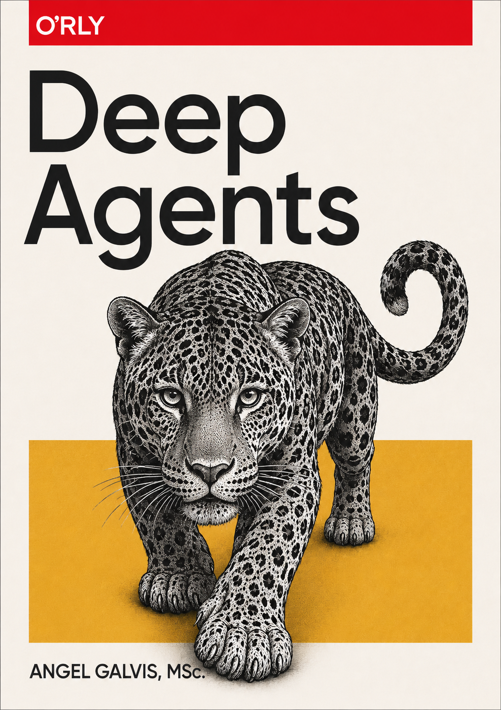
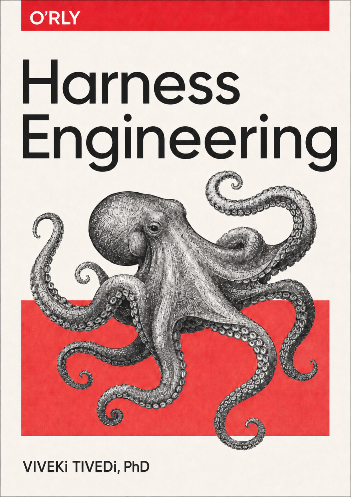
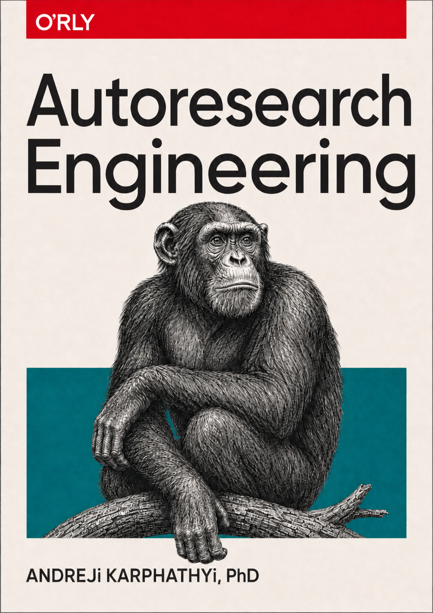
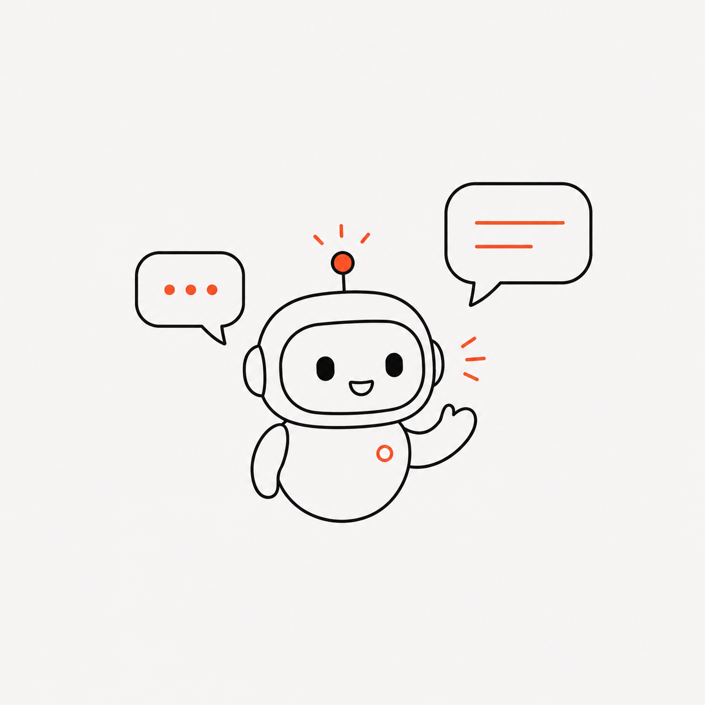
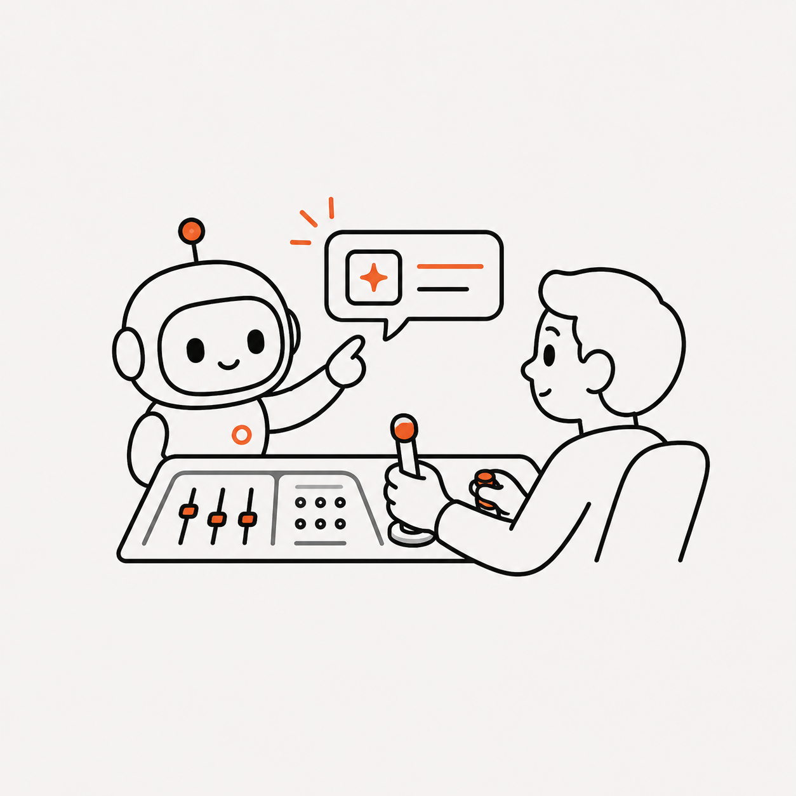
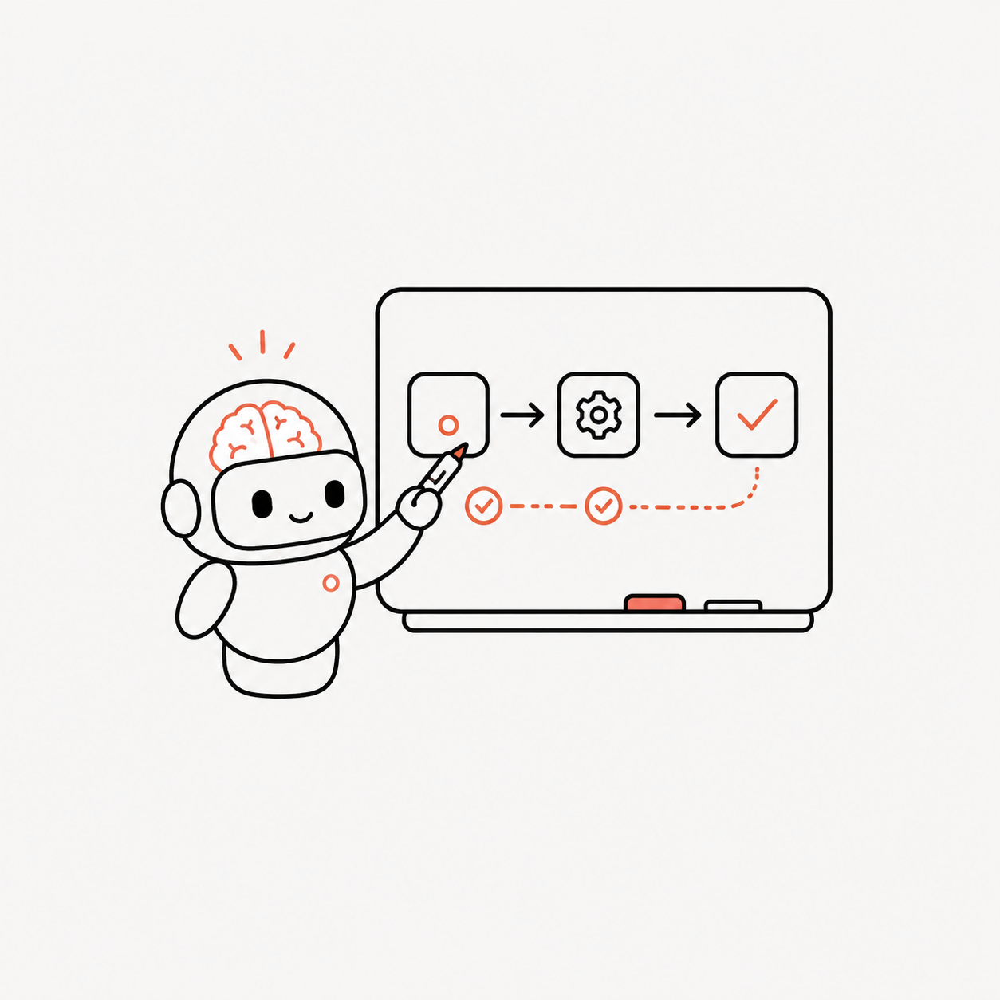
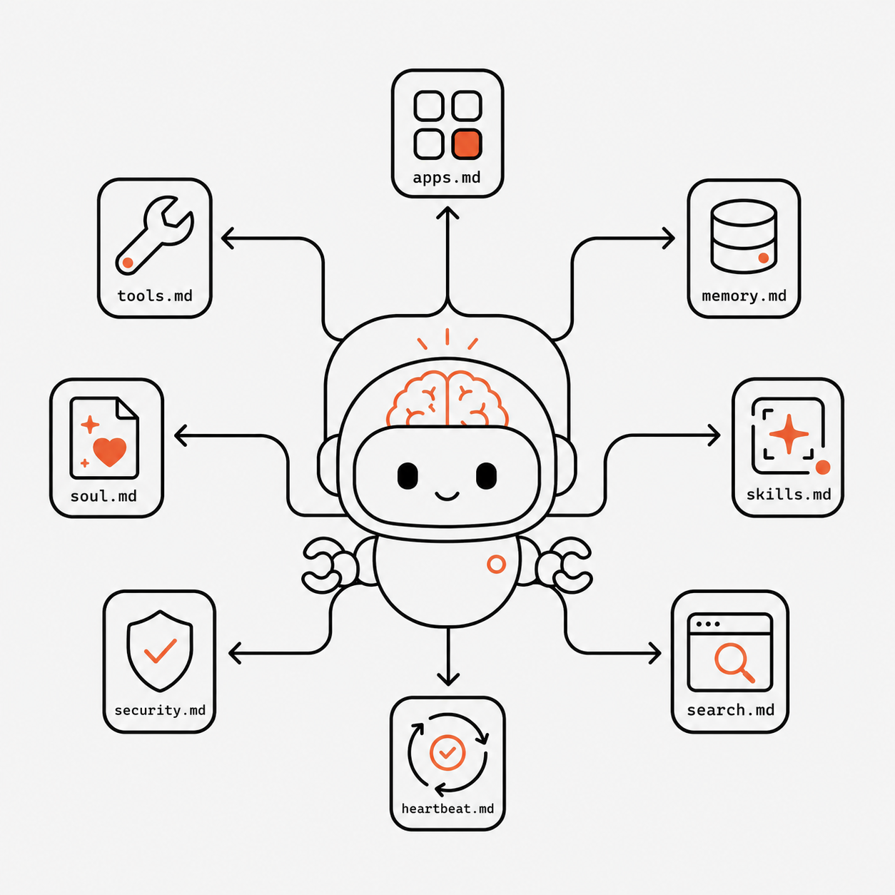
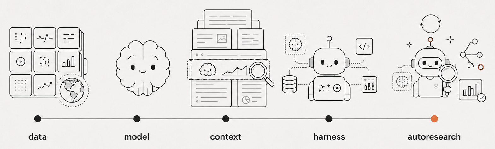

Tres temas. Si espera a leerlos en libro en 2030, ¡va a llegar tarde!

01 · deep agents

02 · harness engineering

03 · autoresearch
Flisol | datastrat02 / 28
Flisol · Cusol · 20262026-05
La promesa de la base tecnológica es la misma de siempre.
Velocidad
Escalabilidad
Flisol | datastrat03 / 28
Flisol · Cusol · 20262026-05
La promesa se mantiene. Los entornos cambian.
ENTORNO 01
Solo el humano opera sobre el software.
ENTORNO 02
Humano e IA operan sobre el mismo software.
El código está dejando de ser observado línea a línea (se mantiene auditable).
Flisol | datastrat04 / 28
Flisol · Cusol · 20262026-05
CASO A
Una empresa quiere detectar y priorizar oportunidades de negocio con el sector estatal.
La revisión manual no escala. Cientos de páginas por pliego, pocos días para detectar requisitos con precisión.
Mismo inicioMismo finalSECOP IIpropuesta
Hoy
lectura humana → priorización por experiencia → cruce manual con cientos de páginas
Agent-ready
Agente · scout · < 5 min
monitorea SECOP, filtra y prioriza con UNSPSC + keywords + rúbrica corporativa. Entrega top viables del día.
Deep Agent · analista · < 15 min
cruza pliego vs RUP, perfil financiero y experiencia. Entrega recomendación OFERTAR / NO OFERTAR + plan de acción.
Procesos nuevos en SECOP II~5.000 / día · ~1,9 M / año (2025)
Flisol | datastrat05 / 28
Flisol · Cusol · 20262026-05
CASO B
Un restaurante vende por WhatsApp. Antes de preparar y despachar, necesita confirmar el pago.
El pedido llega por conversación. La verificación del pago sigue siendo manual.
Mismo inicioMismo finalpedido WhatsAppdespacho
Hoy
transferencia → pantallazo → revisión humana
pago existe, pero no como estado verificable
Agent-ready
cobro Push/QR/link → estado de pago verificable
el agente puede validar monto, referencia y estado
Ventas originadas o cerradas por canales conversacionales~COP $20–30 billones
Flisol | datastrat06 / 28
Flisol · Cusol · 20262026-05
Cómo un agente le habla a Stripe en 2026.
Hay dos interfaces. Ambas son nativas para agentes.
CLI — comando directo
$ stripe get # interfaz directa · el agente ya sabe qué llamar
/v1/payment_intents/ # objeto Stripe: PaymentIntent · estado operativo del pago
pi_3QxYzAbCdEf... # id del pago que quiero verificar
El agente empieza por la ruta.
MCP — protocolo descubrible
tool: fetch_stripe_resources # herramienta disponible expuesta por Stripe MCP
resource: payment_intent/ # objeto específico que contiene el estado
pi_3QxYzAbCdEf... # id del pago que quiero verificar
El agente empieza por la tarea, no por la ruta.
Flisol | datastrat07 / 28
Flisol · Cusol · 20262026-05
CASO C · Cuenta de ahorros empresarial
Una empresa nueva quiere abrir una cuenta de ahorros mediante un proceso 100% digital. La cuenta de ahorros debe estar asociada al NIT.
Sigue siendo una operación regulada y fragmentada.
Hoy · proceso fragmentado
Solicitud
→
Documentos
Cámara de comercio RUT Composición accionaria Balance inicial Tarjeta profesional del contador Antecedentes del contador
→
Validación
Representante legal Beneficiarios finales Riesgo / cumplimiento Revisión humana
→
Activación
Cuenta lista para operar
Lo que cambia con deep agents
Un deep agent puede sostener la operación completa — reúne requisitos, verifica documentos, consulta sistemas, valida estados, escala excepciones y deja evidencia. No es atención automatizada: es operación interna asistida por agentes.
Sociedades nuevas con NIT PJ / año~82.500
Ventas anualizadas potencialesCOP $2–4 billones
Flisol | datastrat08 / 28
Flisol · Cusol · 20262026-05
Asimetría de la verificación.
La IA automatiza primero las tareas que puede verificar bien.
Basado en: Jason Wei "Asymmetry of verification and verifier's law"
Flisol | datastrat09 / 28
Flisol · Cusol · 20262026-05
Dónde los agentes realmente crean valor.
Importan cuando entran en cadenas verificables de decisión, ejecución y consecuencia.
Complejidad operativa
altabaja
Juicio humano
alta ambigüedad
criterio experto
baja estandarización
ZONA DE MAYOR VALOR PARA AGENTES
generación de código con tests automáticos
refactoring guiado por métricas
diagnóstico y triage de bugs
análisis de datos con métrica clara
investigación con citas verificables
Uso conversacional
atención
orientación
respuesta
Automatización simple
reglas claras
tareas repetibles
bajo riesgo
ejecución lineal
bajaVerificabilidadalta
Flisol | datastrat10 / 28
Flisol · Cusol · 20262026-05
La IA del Entorno 02 tiene muchas formas.

Chatbot
conversa, responde

Copilot
sugiere · el humano ejecuta

Workflow
ejecuta una secuencia predefinida

AGENTE
decide su propio camino y usa herramientas dinámicamente
« Los agentes son sistemas donde los LLMs dirigen dinámicamente sus propios procesos y uso de herramientas, manteniendo control sobre cómo cumplen las tareas. »
─ Anthropic, Building Effective Agents (dic 2024)
Flisol | datastrat11 / 28
Flisol · Cusol · 20262026-05
El horizonte de tarea de los agentes se expande.
La frontera ya no es solo responder mejor. Es sostener trabajo útil durante más tiempo.
Cómo leer el eje Y
Cada punto = duración humana estimada de la tarea en que el modelo logra 50% de éxito. Mide dificultad de tarea — no tiempo real de ejecución de la IA.
Fuentes
METR, Task-Completion Time Horizons of Frontier AI Models, 2026
METR, Time Horizon 1.1, 2026
Kwa et al., Measuring AI Ability to Complete Long Software Tasks, arXiv, 2025/2026
* Mythos Preview: METR LinkedIn post, evaluación temprana marzo 2026
Si el horizonte crece, el trabajo deja de parecer una consulta. Empieza a parecerse a una operación.
Flisol | datastrat12 / 28
Flisol · Cusol · 20262026-05
Por qué pasar de agentes a deep agents.
Cuando el horizonte de tarea crece, un agente simple deja de bastar.
más tiempo──→exige planeación
más contexto──→exige gestión de contexto
más subtareas──→exige delegación
más sesiones──→exige memoria
más herramientas──→exige harness
más riesgo──→exige evaluación y control
Deep agents = agentes con harness para trabajo largo.
No necesitamos deep agents porque el modelo "piense más".
Los necesitamos porque el trabajo ya dura más, se ramifica más y se rompe más.
Cuando el horizonte crece, el cuello de botella deja de ser el modelo. Pasa a ser el sistema que lo contiene.
Flisol | datastrat13 / 28
Flisol · Cusol · 20262026-05
Qué es un harness.
Los 4 componentes mínimos:
PLANEACIÓNdescomposición de tareas largas en pasos verificables
MEMORIAcontexto activo + persistencia entre sesiones
HERRAMIENTASAPIs, MCP, CLIs, search, code exec
GUARDRAILSsandbox, límites de gasto, auditoría
Mitchell Hashimoto
Cada vez que encuentras que un agente comete un error, diseñas una solución para que ese agente no vuelva a cometer ese mismo error.
OpenAI
Harness engineering es diseñar entornos, intención y bucles de retroalimentación para que los agentes ejecuten trabajo confiable.
LangChain · Vivek Trivedy
Agent = Model + Harness.
Anthropic
El harness es el sistema de instrucciones, restricciones y orquestación que permite que un modelo actúe como agente.
El modelo es el motor. El harness es lo que lo vuelve confiable.
Flisol | datastrat14 / 28
Flisol · Cusol · 20262026-05
Flisol | datastrat15 / 28
Flisol · Cusol · 20262026-05
Quién más dice que esto importa.
« Every company in the world today needs to have an OpenClaw strategy — an agentic systems strategy.
Just as we all had our Linux strategy. Just as we all had to have an internet strategy. Just as we all needed a mobile and cloud strategy. »
─ Jensen Huang, CEO Nvidia · GTC 2026, 16 de marzo
Contexto que lo hace todavía más fuerte:
OpenClaw fue creado el 25 de enero de 2026.
250.000+ stars en GitHub en 60 días.
Proyecto open source de crecimiento más rápido en la historia.
Nvidia no compitió.
Lanzó NemoClaw — versión enterprise — desarrollada con el creador de OpenClaw.
Flisol | datastrat16 / 28
Flisol · Cusol · 20262026-05
Esto no es teoría. Harnesses en producción en 2026.
PROPIETARIO
Claude Code
Anthropic
Codex
OpenAI
OPEN SOURCE
OpenClaw
Peter Steinberger · ene 2026 Modular: brain/hands/session 250k+ stars en 60 días
Hermes Agent
Nous Research, feb 2026 Memoria persistente Auto-mejora skills 66k+ stars en 2 meses
ENTERPRISE
NemoClaw
Nvidia, sobre OpenClaw Stack de seguridad y escalabilidad
Memoria persistente entre sesiones
= un agente asesor financiero que no pregunta dos veces lo mismo al mismo cliente.
Flisol | datastrat17 / 28
Flisol · Cusol · 20262026-05
Flisol | datastrat18 / 28
Flisol · Cusol · 20262026-05
Por eso cada empresa necesita una estrategia de Harness Engineering.
HARNESS EMPRESARIAL — construido por la empresa (moat)
Identidad y autorización
Conocimiento y fuentes de verdad
Skills
Riesgo, control y compliance
Mejora continua
El modelo propone el siguiente paso.
El harness base lo ejecuta de forma estable.
El harness empresarial decide qué puede hacer, con qué evidencia, bajo qué límites y cuándo escalar.
Una empresa construye un lineamiento común (identidad, evidencia, compliance) y harnesses especializados por proceso o problema a resolver.
Flisol | datastrat19 / 28
Flisol · Cusol · 20262026-05
Autoresearch Engineering.
El patrón donde el agente se mejora a sí mismo:
propone, prueba, mide, conserva lo que mejora, descarta lo que no.
Las 3 primitivas · Karpathy, mar 2026
1.Archivo editableun solo archivo que el agente puede modificar
2.Métrica escalarun solo número objetivo que decide si mejoró
3.Ciclo con tiempo fijocada experimento dura lo mismo
Resultados públicos
Karpathy (mar 2026)
· 700 experimentos en 2 días · 20 mejoras genuinas · +11% speedup sobre código ya optimizado
Shopify (Tobi Lütke, CEO)
· Liquid (motor de tiendas Shopify) · +53% más rápido · 40+ métricas operativas en Shopify, todas mejoradas
Open source: github.com/karpathy/autoresearch · 11.7k stars
El harness sostiene el trabajo. Autoresearch lo mejora iterativamente para optimizar una métrica.
Flisol | datastrat20 / 28
Flisol · Cusol · 20262026-05
Flisol | datastrat21 / 28
Flisol · Cusol · 20262026-05
Cómo evolucionó la ingeniería de IA.
En veinte años pasamos de etiquetar datasets a construir sistemas que diseñan sus propios experimentos.

Flisol | datastrat22 / 28
Flisol · Cusol · 20262026-05
Cómo evolucionó la ingeniería de IA.
En veinte años pasamos de etiquetar datasets a construir sistemas que diseñan sus propios experimentos.
data
estructura
D = {(x,y)} ~ Pworld
model
entrena
θ* = argminθ ED[L(fθ(x), y)]
context
cura
y ~ Pθ*(· | c) c = C(q, Mq, T, E)
harness
opera
at ~ πθ*(st, ct) ot = τ( G(at) )
autoresearch
experimenta
Δ ~ πθ*(z, A) keep TΔ(z) si m' < m
Nomenclatura
dataD dataset · x, y entrada / salida · Pworld distribución del mundo modelθ pesos del modelo · θ* pesos óptimos tras entrenamiento · ED[·] esperanza sobre D · L función de pérdida · fθ modelo context(·) argumento sobre el que se distribuye (placeholder) · Pθ* distribución del modelo entrenado · c contexto · C(·) función de curación · q query · Mq memoria · T tools · E evidencia harnessat acción · πθ* política del modelo entrenado · st estado · ct contexto en t · ot observación · τ tool · G validación (guardrail) · t paso autoresearchΔ cambio propuesto · z configuración editable · A arena (spec + espacio editable + métrica + presupuesto + regla) · TΔ(·) operación que aplica Δ a z · m = M(z) valor de la métrica · M métrica
Flisol | datastrat23 / 28
Flisol · Cusol · 20262026-05
Cuándo nació cada fase.
Cada disciplina se consolidó cuando la anterior maduró.
Fase
Cuándo se consolidó
La idea central
data1
~2010s era big data · GFS (2003) + MapReduce (2004)
estructurar el mundo en un dataset
model2
2017 Transformers · Vaswani et al.
entrenar pesos óptimos sobre ese dataset
context3
sep 2025 Anthropic
curar qué tokens condicionan al modelo
harness4
mar 2026 Vivek Trivedy · LangChain
envolver el modelo con un loop gobernado · Agent = Model + Harness
autoresearch5
mar 2026 Andrej Karpathy
y ahora, que el sistema diseñe sus propios experimentos
Fuentes (APA 7)
1aGhemawat, S., Gobioff, H., & Leung, S.-T. (2003). The Google file system. SOSP '03. research.google/pubs/the-google-file-system
1bDean, J., & Ghemawat, S. (2004). MapReduce: Simplified data processing on large clusters. OSDI '04. research.google/pubs/mapreduce-simplified-data-processing-on-large-clusters
2Vaswani, A., et al. (2017). Attention is all you need. NeurIPS 2017. arxiv.org/abs/1706.03762
3Rajasekaran, P., Dixon, E., Ryan, C., & Hadfield, J. (2025). Effective context engineering for AI agents. Anthropic Engineering. anthropic.com/engineering/effective-context-engineering-for-ai-agents
4Trivedy, V. (2026, March 10). The anatomy of an agent harness. LangChain Blog. langchain.com/blog/the-anatomy-of-an-agent-harness
5Karpathy, A. (2026). autoresearch [Software]. GitHub. github.com/karpathy/autoresearch
Flisol | datastrat24 / 28
Flisol · Cusol · 20262026-05
Domina la disciplina antes de que se vuelva commodity.
OPORTUNIDADES PARA TI · 1 / 2 · APRENDE
1
Aprende harness engineering · ninguna universidad lo está enseñando
En el modelo no tenemos ventajas competitivas. Pero en el harness tenemos cómo construir — y la disciplina apenas se está nombrando.
6-8 semanas intensivas. Leer ambos papers, ver tutoriales, escribir tu primer agente, modificar un harness abierto. Ventana rara: hoy un estudiante puede saber más que su profesor.
2
Lee un harness abierto entero
Cinco harnesses con código abierto, cada uno con una decisión de diseño distinta. Leer uno completo es la curva de aprendizaje más rápida que existe.
Hermeslearning loop · memoria persistente · aprende entre sesiones (Nous Research, MIT)nousresearch/hermes-agentOpenClawel original · TypeScript / Node.js · ~371k LoC · multi-canal nativo (WhatsApp, Slack, Discord, Telegram, iMessage…)openclaw/openclawNanoClawaislamiento + comprensible · cada agente en un contenedor Linux (Docker o Apple Container) · si el agente hace algo raro, no toca tu máquinananocoai/nanoclawPicoClawembedded · Go · <10MB RAM · corre en Raspberry Pi Zero (~$10 USD) · ideal para dispositivos en camposipeed/picoclawNullClawultra-minimal · Zig · binario 678KB · 1MB RAM · arranca en 2ms · cabe en cualquier microcontroladornullclaw/nullclaw
acción · git clone · README + tres archivos clave · un fin de semana
Flisol | datastrat25 / 28
Flisol · Cusol · 20262026-05
Construye un producto desde Colombia.
OPORTUNIDADES PARA TI · 2 / 2 · CONSTRUYE
3
Construye sobre data pública colombiana
Tres puertas de entrada a la data pública del país. Ninguna pide trámite. El patrón scout + analista del Caso A funciona en cualquiera de ellas.
datos.gov.coSocrata SODA · REST · SDKs en Python, R, JS, .NET · catálogo central del Estado (miles de datasets)DANEmicrodatos.dane.gov.co + Geoportal (ArcGIS REST) · censo, encuestas oficiales, geoSECOP II1,9M procesos/año · contratación pública
acción · dataset abierto + pregunta que se repite en una industria + automatización del Caso A = primer producto vendible
4
Emprende con deep agents — no con chatbots
Un chatbot responde una pregunta. Un deep agent sostiene una operación de horas. Cualquier trabajo humano de 4-8 horas es un producto posible.
Agente normal
Trabaja por solicitud:
loop corto · piensa → herramienta → responde
estado vive en el contexto de la solicitud
horizonte: segundos a minutos
pensado para responder
entrega: una respuesta
Deep agent
Trabaja por misión:
escribe un plan, lo ejecuta, delega a sub-agentes
estado vive en archivos persistentes
horizonte: horas a días
pensado para entregar
entrega: un artefacto verificable (PR, informe, reporte)
Flisol | datastrat26 / 28
Flisol · Cusol · 20262026-05
El software hoy puede ser más libre.
Cualquiera con esfuerzo y energía puede construir.
Los agentes son la herramienta más poderosa
que la inteligencia natural ha diseñado.
Flisol | datastrat27 / 28
Flisol · Cusol · 20262026-05
datastrat.
Creamos sistemas de trabajo con agentes.
Diseñados con precisión.
Investigación aplicada
para empresas que se toman en serio
la forma de decidir.